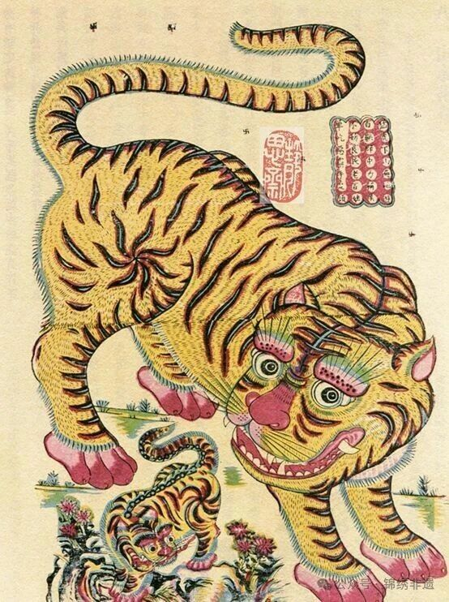
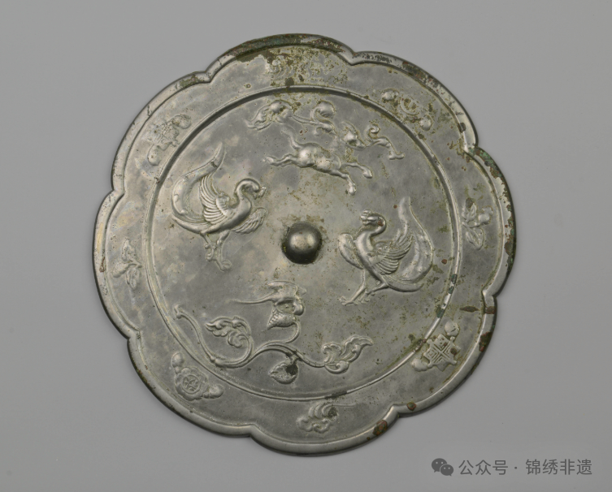
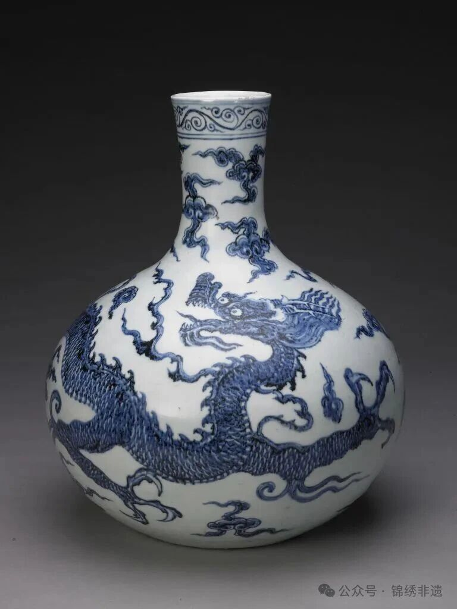

乙巳年的腊月悄然过半，丙午年的身影近在眼前。在这年味愈发浓重的当下，五花八门的贺岁纹样开始步入人们的视野。这些纹样中，除了抱着鲤鱼的胖娃娃、满面红光的老寿星等，还有一类取材于自然，融合了人们瑰丽多彩的想象与对生活的美好寄托的纹样——瑞兽纹。

在北京故宫博物院中，收藏了一尊西周凤鸟纹爵。它与现藏于新疆博物馆的楚国织物上呈现出的凤凰形象均保留了先秦时期独有的粗犷特征，保持了自身既有的神秘，正如吴文化博物馆在《镜鉴纹样：从馆藏唐代双鸾瑞兽纹铜镜说起》中所描述的那样：“······都是一种崇高、权威而高于人类的超自然形象。”。
这种崇高而充满权威的意蕴被保留了下来并以抽象的形式表现在人们的生活中。在吴昊《民间瑞兽造型特征探析——以山西布老虎为例》一文中，作者以山西布老虎延续的虎口噬人造型为例，明确地指出了：“这些奇异的造型不仅表达了某种观念，还是一个基于“美感”的艺术创作行为，二者靠一种既对立又具功能性的双重关系彼此联系，通过超现实的形象，表现人们赋予的超现实力量。”，而这种力量“和人的生存要求保持着对应关系”，“都袒露着人们热切的生命欲望”。
然而，似乎并不是所有人都仅满足于对自然的抽象化描述。现藏于平凉博物馆的唐双鸾瑞兽花鸟纹铜镜上，两只凤凰和一只瑞兽姿态各异，更有花草纹样穿插其间。从这面铜镜上可以清晰地看出，两只凤鸟的形象相较于先秦时期，更多地借鉴了现实中的鸟类形象——凤鸟的身躯更加丰满，更加接近于现实中的鸟类。而铜镜上方的瑞兽则更为明显地体现了这些纹样与现实的关联——整个身躯几乎完全是以现实中的马为范本进行刻画，只有头上的角是工匠想象力的反映。

这面铜镜并非孤例，这一时期的瑞兽纹无一不反映出其刻画已经出现了对现实动物的借鉴，倾向于从人类的幻想中找出那些写实的成分，使得瑞兽的形象不再那么概念化和抽象化，焕发出盎然的生机。
从这时开始，瑞兽纹样走下了“神坛”。在唐代这个雄健且富强的盛世里，代表祥瑞的各式纹样上开始出现了鲜艳的色彩，曾经高高在上的象征逐渐向着世俗的凡人靠拢。尤其中唐以后，这一势头更进入了一个新的高峰。
唐代之后，或许是思想解放的影响，对自然的描摹和对颜色的随心运用愈演愈烈，并在明清达到了顶峰——无论是山水动物纹里的自然风光、蝙蝠纹样的吉祥寓意还是云龙纹象征的皇家威严，无一不使用了写实、具象的形式进行呈现。

当我们回过头来开始梳理瑞兽纹在中国历史上的流变，会发现：尽管时代和社会现实一变再变，中国的传统纹样从未失去其生命力。相反，在历史的长河中，它不断以新的呈现形式一再迸发出新的活力，迎接着下一个新的时代。
而在今天，无论是孩子们手上的布老虎玩偶，还是年画里各异的瑞兽形象，都让人真切地体会到了瑞兽纹在当下现实里的强大生命力。在故宫博物馆与建设银行携手推出的“故宫瑞兽”系列文创中，更是展现了瑞兽纹样的创新应用在未来广阔的前景与巨大的可开发价值。